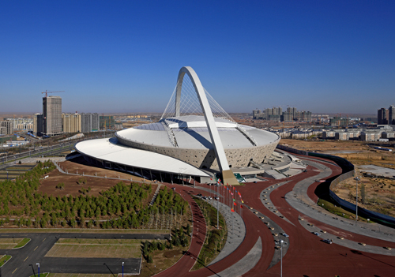
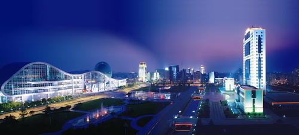
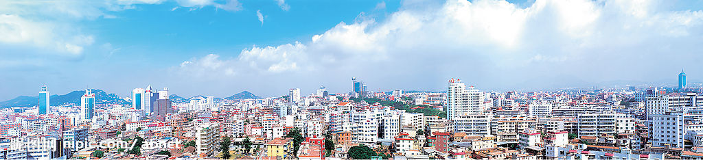
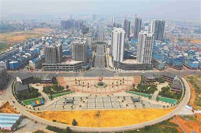
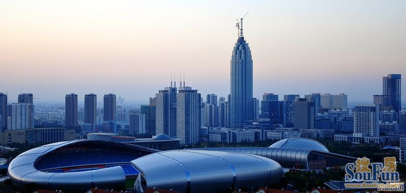
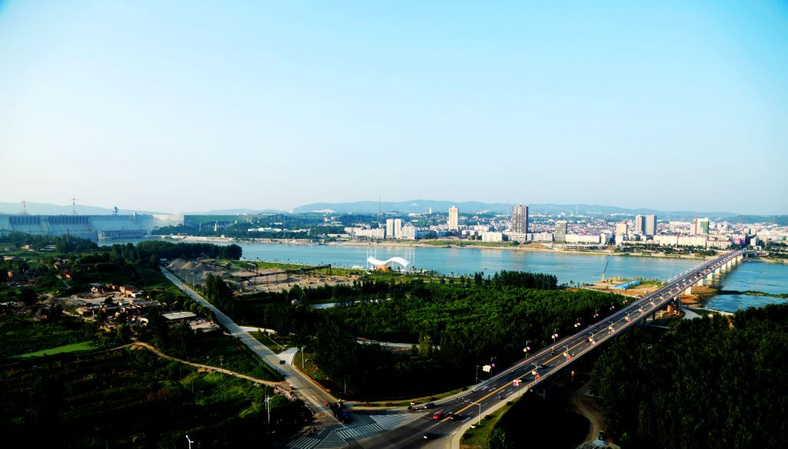
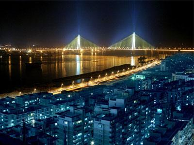
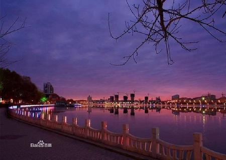
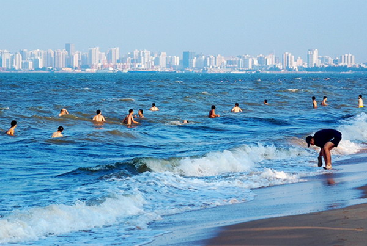

一线城市
- 上海
- 北京
- 广州
- 深圳
二线城市
- 杭州
- 天津
- 成都
- 南京
- 武汉
- 西安
- 重庆
- 沈阳
- 哈尔滨
- 郑州
- 苏州
三线城市
- 昆明
- 长沙
- 乌鲁木齐
- 济南
- 大连
- 兰州
- 青岛
- 无锡
- 合肥
- 石家庄
- 太原
- 长春
- 南昌
- 厦门
- 福州
- 南宁
- 佛山
- 宁波
- 海口
- 西宁
- 呼和浩特
- 温州
- 银川
- 洛阳
- 常州
- 徐州
- 唐山
- 贵阳
- 东莞
- 吉林
- 南通
- 柳州
- 潍坊
- 桂林
- 烟台
- 湛江
- 衡阳
- 大同
- 惠州
- 珠海
- 株洲
- 包头
- 齐齐哈尔
- 淄博
四线城市
- 大庆
- 宜昌
- 中山
- 开封
- 鄂尔多斯
- 常德
- 九江
- 泉州
- 沧州
- 岳阳
- 长治
- 漳州
- 保定
- 秦皇岛
- 金华
- 滨州
- 绵阳
- 马鞍山
- 汕头
- 黄石
- 赣州
- 威海
- 芜湖
- 三亚
- 德阳
- 邯郸
- 襄阳
- 榆林
- 运城
- 临汾
- 克拉玛依
- 阳泉
- 赤峰
- 东营
- 济宁
- 泰安
- 临沂
- 德州
- 聊城
- 平顶山
- 安阳
- 乐山
- 铜陵
- 扬州
- 新乡
- 焦作
- 许昌
- 南阳
- 宝鸡
- 咸阳
- 湖州
- 新余
- 荆门
- 孝感
- 荆州
- 潮州
- 黄冈
- 湘潭
- 郴州
- 娄底
- 清远
- 嘉兴
- 北海
- 呼伦贝尔
- 乌海
- 梧州
- 玉林
- 舟山
- 自贡
- 泸州
- 南充
- 江门
- 宜宾
- 凉山
- 渭南
- 延安
- 拉萨
- 泰州
- 绍兴
- 鞍山
- 抚顺
- 台州
- 本溪
- 营口
- 盘锦
- 四平
- 松源
- 鸡西
- 佳木斯
- 连云港
- 淮安
- 盐城
- 镇江
- 忂州
- 莆田
- 蚌埠
- 淮南
- 通辽
- 张家口
- 安庆
- 肇庆
- 滁州
- 廊坊
- 龙岩
- 邢台
- 宜春
- 上饶
- 茂名
- 牡丹江
- 日照
- 松原
- 嘉峪关
- 揭阳
- 吕梁
- 义乌（金华）
- 诸暨（绍兴）
- 昆山（江苏省）
- 常熟（苏州）
- 张家港（苏州）
- 石河子（新疆）
- 建德（杭州）
- 太仓（苏州）
- 晋江（泉州）
- 江阴（无锡）
- 增城（广州）
- 吴江（苏州）
- 桐乡（嘉兴）
- 温岭（台州）
- 兴化（泰州）
- 宜兴（无锡）
- 余姚（宁波）
五线城市
- 绥化
- 双鸭山
- 承德
- 衡水
- 晋城
- 朔州
- 宿迁
- 晋中
- 忻州
- 巴彦淖尔
- 乌兰察布
- 兴安
- 丹东
- 锦州
- 葫芦岛
- 阜新
- 辽阳
- 铁岭
- 朝阳
- 黄山
- 辽源
- 通化
- 鹤岗
- 伊春
- 七台河
- 黑河
- 丽水
- 淮北
- 宿州
- 六安
- 池州
- 宣城
- 三明
- 南平
- 宁德
- 景德镇
- 萍乡
- 吉安
- 抚州
- 枣庄
- 莱芜
- 濮阳
- 漯河
- 贺州
- 三门峡
- 商丘
- 阳江
- 信阳
- 驻马店
- 十堰
- 鄂州
- 咸宁
- 随州
- 益阳
- 永州
- 梅州
- 怀化
- 韶关
- 河源
- 鹰潭
- 钦州
- 云浮
- 攀枝花
- 防城港
- 百色
- 遂宁
- 鹤壁
- 内江
- 来宾
- 广安
- 雅安
- 资阳
- 遵义
- 毕节
- 曲靖
- 玉溪
- 贵港
- 丽江
- 普洱
- 临沧
- 楚雄
- 铜川
- 汉中
- 菏泽
- 周口
- 达州
- 白山
- 邵阳
- 张家界
- 商洛
- 金昌
- 白银
- 武威
- 张掖
- 平凉
- 酒泉
- 庆阳
- 广元
- 安顺
- 保山
- 白城
- 安康
- 阜阳
- 汕尾
- 六盘水
- 眉山
- 亳州
- 吴忠
- 中卫
- 昌吉（昌吉）
- 绥芬河（黑龙江省）
- 即墨（青岛）
- 三河（廊坊）
- 耒阳（衡阳）
- 满洲里（内蒙古）
- 库尔勒（巴音郭楞）
- 敦煌（甘肃省）
- 大理（大理）
- 文山（文山）
- 吐鲁番（吐鲁番）
- 哈密（哈密）
- 格尔木（青海省）
- 和田（和田）
- 伊宁（伊犁）
- 荣成（山东省）
- 义马（三门峡）
- 阿克苏（阿克苏）
- 龙口（烟台）
- 景洪（西双版纳）
- 延吉（延边）
- 慈溪（宁波）
- 上虞（绍兴）
- 霍林郭勒（通辽）
- 招远（烟台）
- 迁安（河北省）
- 鹤山（江门）
- 台山（江门）
- 石狮（泉州）
巢湖（合肥）- 富阳（杭州）
- 江山（衢州）
- 福清（福州）
- 长乐（福州）
- 临安（杭州）
- 仪征（扬州）
- 高邮（扬州）
- 寿光（潍坊）
- 东阳（金华）
- 二连浩特（内蒙古）
- 锡林浩特（锡林郭勒）
- 嵊州（绍兴）
- 滕州（枣庄）
- 兰溪（金华）
- 章丘（济南）
- 海宁（嘉兴）
- 彭州（成都）
- 邛崃（成都）
- 崇州（成都）
- 广汉（德阳）
- 什邡（德阳）
- 绵竹（德阳）
- 江油（绵阳）
姜堰（泰州）- 喀什（喀什）
- 都匀（黔南）
- 文登（威海）
- 乳山（威海）
- 丹阳（镇江）
- 福安（宁德）
- 福鼎（宁德）
- 胶州（青岛）
- 奉化（宁波）
- 海门（南通）
- 启东（南通）
- 如皋（南通）
- 平湖（嘉兴）
- 南安（泉州）
- 临海（台州）
- 溧阳（常州）
- 瑞安（温州）
- 乐清（温州）
- 宣威（曲靖）
藁城（石家庄）- 公主岭（吉林省）
- 长葛（许昌）
- 个旧（红河）
- 巩义（河南省）
- 武安（邯郸）
- 邹城（济宁）
- 贵溪（鹰潭）
- 兖州（济宁）
- 麻城（黄冈）
- 永康（金华）
- 榆树（长春）
- 简阳（资阳）
- 天门（湖北省）
- 天长（安徽省）
- 英德（广东省）
- 仙桃（湖北省）
- 普宁（广东省）
- 调兵山（铁岭）
六线城市
- 石嘴山
- 崇左
- 铜仁
- 天水
- 海东
- 河池
- 恩施
- 昭通
- 固原
- 巴中
- 陇南
- 定西
- 昌都
- 三沙
- 灵武（银川）
- 玉树（玉树）
- 临夏（临夏）
- 吉首（湘西）
- 从化（广州）
- 瓦房店（大连）
- 浏阳（长沙）
- 泰兴（江苏省）
- 桂平（广西壮族自治区）
- 林州（安阳）
- 邓州（河南省）
- 北流（玉林）
- 丰城（宜春）
- 罗定（广东省）
- 安丘（山东省）
- 永城（河南省）
- 汝州（河南省）
- 阳春（广东省）
- 项城（周口）
- 汉川（孝感）
- 诸城（潍坊）
- 潜江（湖北省）
胶南（青岛）- 青州（潍坊）
- 枣阳（襄阳）
- 钟祥（荆门）
- 普兰店（大连）
- 庄河（大连）
- 晋州（石家庄）
- 海城（鞍山）
- 肇东（绥化）
- 辛集（河北省）
- 新乐（石家庄）
- 东港（丹东）
鹿泉（石家庄）- 凤城（丹东）
- 遵化（唐山）
- 凌海（锦州）
- 北镇（锦州）
- 盖州（营口）
- 南宫（邢台）
- 大石桥（营口）
- 沙河（邢台）
- 灯塔（辽阳）
- 涿州（保定）
- 定州（河北省）
- 开原（铁岭）
- 安国（保定）
- 北票（朝阳）
- 高碑店（保定）
- 阆中（南充）
- 高密（潍坊）
- 乐平（景德镇）
- 兴宁（广东省）
- 恩施（恩施）
- 常宁（衡阳）
- 黄骅（沧州）
- 库尔勒（巴音郭楞）
- 高安（宜春）
- 瑞金（赣州）
- 临清（聊城）
- 灵宝（三门峡）
- 开平（江门）
- 大冶（黄石）
- 武冈（邵阳）
- 应城（孝感）
- 沅江（益阳）
- 乐陵（德州）
- 扶余（松原）
- 昌邑（潍坊）
- 都江堰（成都）
- 文昌（海南）
- 武穴（黄冈）
- 宜州（河池）
- 安陆（孝感）
- 利川（恩施）
- 大理（大理）
- 樟树（宜春）
- 楚雄（楚雄）
- 丹江口（十堰）
- 清镇（贵阳）
- 南雄（广东省）
- 万源（达州）
- 琼海（海南）
- 宜城（襄阳）
- 万宁（海南）
- 禹城（德州）
- 沁阳（焦作）
- 老河口（襄阳）
- 洪江（怀化）
- 高要（肇庆）
- 凌源（朝阳）
- 博乐（博尔塔拉）
- 文山（文山）
- 任丘（沧州）
- 泊头（沧州）
- 兴城（葫芦岛）
- 河间（沧州）
- 霸州（廊坊）
- 德惠（长春）
- 九台（长春）
- 蛟河（吉林）
- 冀州（衡水）
- 桦甸（吉林）
- 深州（衡水）
- 舒兰（吉林）
- 磐石（吉林）
- 双辽（四平）
- 高平（晋城）
- 梅河口（吉林省）
- 介休（晋中）
- 集安（通化）
- 永济（运城）
- 临江（白山）
- 河津（运城）
- 安达（绥化）
- 原平（忻州）
- 大安（白城）
- 侯马（临汾）
- 霍州（临汾）
- 图们（延边）
- 孝义（吕梁）
- 敦化（延边）
- 汾阳（吕梁）
- 龙井（延边）
- 珲春（延边）
- 和龙（延边）
- 牙克石（呼伦贝尔）
- 双城（哈尔滨）
- 扎兰屯（呼伦贝尔）
- 尚志（哈尔滨）
- 额尔古纳（呼伦贝尔）
- 五常（哈尔滨）
- 根河（呼伦贝尔）
- 讷河（齐齐哈尔）
- 丰镇（乌兰察布）
- 虎林（鸡西）
- 乌兰浩特（兴安盟）
- 铁力（伊春）
- 密山（鸡西）
- 洮南（白城）
- 同江（佳木斯）
- 富锦（佳木斯）
- 新民（沈阳）
- 海林（牡丹江）
- 宁安（牡丹江）
- 穆棱（牡丹江）
- 北安（黑河）
- 五大连池（黑河）
- 龙泉（丽水）
- 海伦（绥化）
- 桐城（安徽省）
- 新沂（徐州）
- 明光（滁州）
- 邳州（徐州）
- 界首（安徽省）
- 宁国（安徽省）
- 龙海（漳州）
- 东台（盐城）
- 大丰（盐城）
- 建瓯（南平）
- 漳平（龙岩）
- 扬中（镇江）
- 金坛（常州）
- 句容（镇江）
- 靖江（泰州）
- 瑞昌（九江）
- 东方（海南）
- 峨眉山（乐山）
- 舞钢（平顶山）
- 华蓥（广安）
- 资兴（郴州）
- 津市（常德）
- 孟州（焦作）
- 永安（三明）
南康（赣州）- 井冈山（吉安）
- 芒市（德宏）
- 平度（青岛）
- 莱西（青岛）
- 莱阳（山东省）
- 莱州（烟台）
- 蓬莱（烟台）
- 栖霞（烟台）
- 海阳（烟台）
- 曲阜（济宁）
- 新泰（泰安）
- 肥城（泰安）
- 荥阳（郑州）
- 新密（郑州）
- 新郑（郑州）
- 登封（郑州）
- 偃师（洛阳）
- 卫辉（新乡）
- 辉县（新乡）
- 禹州（许昌）
- 宜都（宜昌）
- 当阳（宜昌）
- 枝江（宜昌）
- 石首（荆州）
- 乐昌（韶关）
- 洪湖（荆州）
- 松滋（荆州）
- 赤壁（咸宁）
- 广水（随州）
- 醴陵（株洲）
- 湘乡（湘潭）
- 韶山（湘潭）
- 汨罗（岳阳）
- 临湘（岳阳）
- 涟源（娄底）
- 济源（河南省）
- 恩平（江门）
- 廉江（湛江）
- 雷州（湛江）
- 吴川（湛江）
- 高州（广东省）
- 化州（茂名）
- 信宜（茂名）
- 建阳（南平）
- 冷水江（娄底）
- 景洪（西双版纳）
- 德兴（上饶）
- 武夷山（南平）
- 奎屯（伊犁）
- 凭祥（广西壮族自治区）
- 潞城（长治）
- 古交（太原）
- 四会（肇庆）
- 陆丰（汕尾）
- 福泉（黔南）
- 邵武（南平）
- 连州（清远）
- 乌苏（伊犁）
- 岑溪（广西壮族自治区）
- 儋州（海南）
- 赤水（遵义）
- 仁怀（贵州省）
- 兴义（黔西南）
- 塔城（伊犁）
- 凯里（黔东南）
- 安宁（昆明）
- 开远（红河）
- 蒙自（红河）
- 日喀则（日喀则）
- 合山（来宾）
- 阿拉尔（新疆）
- 共青城（九江）
- 阜康（昌吉）
- 瑞丽（德宏）
- 图木舒克（新疆）
- 东兴（防城港）
- 五指山（海南）
- 兴平（咸阳）
- 韩城（渭南）
- 华阴（渭南）
- 德令哈（海西）
- 青铜峡（吴忠）
- 阿图什（克州）
- 阿勒泰（伊犁）
- 博乐（博尔塔拉）
- 五家渠（新疆）
- 北屯（新疆）
- 阿尔山（兴安盟）
- 玉门（甘肃省）
- 阿拉山口（博尔塔拉）
- 合作（甘南）
指标设计
除了以下详细列出的肯德基和500强企业之外，我们还从公开资料中收集对比了包括民营500强企业分布、医院分布、典型连锁品牌分布等数据。从统计年鉴中对比了城市绿化率、财政收入等数据。
管辖面积和人口、人口净流出、航班数、火车站客流量、公共交通出行率和辖区内各等级公路通车里程都在本资料考察范围内。
肯德基指数
| 城市 | 肯德基 | 市辖区常住人口 | 密度 ▴ |
|---|---|---|---|
| 深圳 | 198 | 1054.7 | 0.188 |
| 苏州 | 76 | 407.4 | 0.187 |
| 无锡 | 61 | 354.5 | 0.172 |
| 惠州 | 27 | 158 | 0.171 |
| 绍兴 | 15 | 88.3 | 0.17 |
| 北京 | 320 | 1882.73 | 0.17 |
| 杭州 | 97 | 599.3 | 0.162 |
| 三亚 | 11 | 68.5 | 0.161 |
| 郑州 | 44 | 282.2 | 0.156 |
| 肇庆 | 10 | 64 | 0.156 |
| 广州 | 168 | 1108 | 0.152 |
| 马鞍山 | 11 | 74 | 0.149 |
| 长沙 | 54 | 361.75 | 0.149 |
| 沧州 | 7 | 48.86 | 0.143 |
| 嘉兴 | 17 | 120 | 0.142 |
| 丽江 | 3 | 21.1 | 0.142 |
| 青岛 | 64 | 458.6 | 0.14 |
| 盐城 | 22 | 161 | 0.137 |
| 宁波 | 48 | 349.2 | 0.137 |
| 滁州 | 6 | 44.5 | 0.135 |
| 珠海 | 21 | 156 | 0.135 |
| 保定 | 14 | 103.82 | 0.135 |
| 昆山 | 22 | 164.6 | 0.134 |
| 上海 | 314 | 2380.4 | 0.132 |
| 沈阳 | 82 | 625.7 | 0.131 |
| 南京 | 106 | 810.9 | 0.131 |
| 东营 | 13 | 100.3 | 0.13 |
| 义乌 | 16 | 123.5 | 0.13 |
| 济南 | 56 | 433.5 | 0.129 |
| 长春 | 50 | 392 | 0.128 |
| 厦门 | 45 | 353.1 | 0.127 |
| 镇江 | 15 | 120 | 0.125 |
| 郴州 | 8 | 65.5 | 0.122 |
| 南昌 | 28 | 235.6 | 0.119 |
| 威海 | 10 | 84.4 | 0.118 |
| 东莞 | 81 | 694.7 | 0.117 |
| 石家庄 | 33 | 286 | 0.115 |
| 大连 | 47 | 408 | 0.115 |
| 天津 | 128 | 1109.1 | 0.115 |
| 桂林 | 11 | 97.4 | 0.113 |
| 太仓 | 8 | 71.2 | 0.112 |
| 丽水 | 5 | 45.1 | 0.111 |
| 合肥 | 37 | 334 | 0.111 |
| 吴江 | 14 | 127.5 | 0.11 |
| 榆林 | 7 | 63.7 | 0.11 |
| 汕尾 | 5 | 46 | 0.109 |
| 河源 | 5 | 46.5 | 0.108 |
| 怀化 | 6 | 55.3 | 0.108 |
| 秦皇岛 | 11 | 103 | 0.107 |
| 台州 | 20 | 190.1 | 0.105 |
| 廊坊 | 9 | 86.7 | 0.104 |
| 太原 | 36 | 345.5 | 0.104 |
| 株洲 | 11 | 105.5 | 0.104 |
| 哈尔滨 | 61 | 587.8 | 0.104 |
| 许昌 | 5 | 49.8 | 0.1 |
| 漳州 | 7 | 70.5 | 0.099 |
| 海口 | 20 | 204.6 | 0.098 |
| 延吉 | 4 | 41.3 | 0.097 |
| 张家港 | 12 | 124.8 | 0.096 |
| 舟山 | 8 | 84.2 | 0.095 |
| 泉州 | 13 | 143.4 | 0.091 |
| 慈溪 | 13 | 146.2 | 0.089 |
| 黄山 | 4 | 45 | 0.089 |
| 盘锦 | 6 | 67.6 | 0.089 |
| 南通 | 20 | 227.4 | 0.088 |
| 成都 | 65 | 741.56 | 0.088 |
| 芜湖 | 12 | 140 | 0.086 |
| 金华 | 9 | 107.6 | 0.084 |
| 福州 | 25 | 296.3 | 0.084 |
| 常州 | 28 | 333.86 | 0.084 |
| 唐山 | 28 | 338.5 | 0.083 |
| 中山 | 26 | 312 | 0.083 |
| 温州 | 25 | 303.9 | 0.082 |
| 三明 | 3 | 37 | 0.081 |
| 宜兴 | 10 | 123.5 | 0.081 |
| 岳阳 | 10 | 123.1 | 0.081 |
| 娄底 | 4 | 49.7 | 0.08 |
| 开封 | 5 | 63.3 | 0.079 |
| 常熟 | 12 | 151 | 0.079 |
| 余姚 | 8 | 101 | 0.079 |
| 通化 | 4 | 50.6 | 0.079 |
| 衡水 | 4 | 52.2 | 0.077 |
| 乌鲁木齐 | 15 | 196 | 0.077 |
| 佛山 | 55 | 720 | 0.076 |
| 武汉 | 74 | 978.5 | 0.076 |
| 绥芬河 | 1 | 13.2 | 0.076 |
| 张家口 | 8 | 105.9 | 0.076 |
| 邯郸3 | 11 | 144.4 | 0.076 |
| 昆明 | 29 | 385.4 | 0.075 |
| 泰州5 | 12 | 160.5 | 0.075 |
| 邢台 | 5 | 67 | 0.075 |
| 德州 | 5 | 67.9 | 0.074 |
| 桐乡 | 6 | 81.6 | 0.074 |
| 阳江 | 5 | 67.7 | 0.074 |
| 大庆 | 12 | 164 | 0.073 |
| 济宁 | 9 | 125 | 0.072 |
| 银川 | 9 | 129 | 0.07 |
| 临沂 | 16 | 230.3 | 0.069 |
| 西安 | 44 | 650.1 | 0.068 |
| 新乡 | 7 | 105 | 0.067 |
| 扬州5 | 16 | 240 | 0.067 |
| 呼和浩特 | 13 | 197.9 | 0.066 |
| 松原 | 4 | 61.2 | 0.065 |
| 梅州 | 6 | 93.4 | 0.064 |
| 上虞 | 5 | 78 | 0.064 |
| 宜昌 | 9 | 141.1 | 0.064 |
| 石狮 | 4 | 63.7 | 0.063 |
| 牡丹江 | 6 | 96 | 0.063 |
| 晋城 | 3 | 47.7 | 0.063 |
| 延安 | 3 | 47.5 | 0.063 |
| 宿迁 | 9 | 144 | 0.063 |
| 烟台 | 14 | 222 | 0.063 |
| 清远 | 5 | 81 | 0.062 |
| 湖州 | 8 | 129 | 0.062 |
| 海宁 | 5 | 80.7 | 0.062 |
| 长治 | 3 | 48.4 | 0.062 |
| 鄂尔多斯2 | 5 | 80.8 | 0.062 |
| 吉林 | 12 | 197.6 | 0.061 |
| 淮安 | 16 | 263.4 | 0.061 |
| 江门 | 11 | 181 | 0.061 |
| 三河 | 4 | 65.2 | 0.061 |
| 龙岩 | 4 | 66.2 | 0.06 |
| 鞍山 | 9 | 150.5 | 0.06 |
| 韶关 | 6 | 100 | 0.06 |
| 葫芦岛 | 5 | 85 | 0.059 |
| 南宁 | 20 | 343.6 | 0.058 |
| 丹东 | 5 | 86 | 0.058 |
| 莆田 | 11 | 195.4 | 0.056 |
| 吉安 | 3 | 53.8 | 0.056 |
| 阳泉 | 4 | 72.2 | 0.055 |
| 海门 | 5 | 90.7 | 0.055 |
| 蚌埠 | 6 | 110 | 0.055 |
| 包头 | 12 | 222.24 | 0.054 |
| 重庆 | 43 | 795.36 | 0.054 |
| 景洪 | 2 | 37.1 | 0.054 |
| 溧阳 | 4 | 75 | 0.053 |
| 兰州 | 14 | 263 | 0.053 |
| 诸暨 | 6 | 113.7 | 0.053 |
| 绵阳 | 7 | 135.5 | 0.052 |
| 宣城 | 4 | 77.2 | 0.052 |
| 荆州 | 6 | 115 | 0.052 |
| 温岭 | 7 | 136.7 | 0.051 |
| 辽阳 | 4 | 79 | 0.051 |
| 淄博 | 16 | 312.8 | 0.051 |
| 西宁 | 6 | 119.7 | 0.05 |
| 湛江 | 8 | 161.1 | 0.05 |
| 衢州 | 4 | 80.5 | 0.05 |
| 涿州 | 3 | 60.3 | 0.05 |
| 潍坊 | 10 | 204 | 0.049 |
| 四平 | 3 | 61.3 | 0.049 |
| 柳州 | 7 | 143.6 | 0.049 |
| 增城 | 5 | 103.6 | 0.048 |
| 营口 | 5 | 103.2 | 0.048 |
| 宁德 | 2 | 43 | 0.047 |
| 泰安 | 8 | 173.5 | 0.046 |
| 大同 | 7 | 156 | 0.045 |
| 北海 | 3 | 66.7 | 0.045 |
| 晋江 | 9 | 198.6 | 0.045 |
| 佳木斯 | 4 | 88 | 0.045 |
| 运城 | 3 | 68 | 0.044 |
| 靖江 | 3 | 68.4 | 0.044 |
| 潮州 | 2 | 45.2 | 0.044 |
| 通辽 | 4 | 89.9 | 0.044 |
| 湘潭 | 4 | 96 | 0.042 |
| 洛阳 | 8 | 192.4 | 0.042 |
| 曲靖 | 3 | 74 | 0.041 |
| 德清县1 | 2 | 49.2 | 0.041 |
| 信阳 | 5 | 123 | 0.041 |
| 茂名 | 5 | 122 | 0.041 |
| 双鸭山 | 2 | 49 | 0.041 |
| 永州 | 4 | 100.7 | 0.04 |
| 兴化 | 5 | 125.3 | 0.04 |
| 贵阳 | 12 | 303.4 | 0.04 |
| 黄石 | 3 | 76.2 | 0.039 |
| 徐州 | 12 | 305.2 | 0.039 |
| 攀枝花 | 3 | 79 | 0.038 |
| 抚顺 | 6 | 163.8 | 0.037 |
| 抚州 | 4 | 109 | 0.037 |
| 本溪 | 4 | 109.3 | 0.037 |
| 淮北 | 4 | 111 | 0.036 |
| 兰溪 | 2 | 56 | 0.036 |
| 赣州2 | 5 | 142.9 | 0.035 |
| 白山 | 2 | 61.2 | 0.033 |
| 儋州 | 3 | 93.2 | 0.032 |
| 晋中 | 2 | 63.6 | 0.031 |
| 赤峰 | 4 | 130 | 0.031 |
| 驻马店 | 2 | 72.2 | 0.028 |
| 西昌 | 2 | 74 | 0.027 |
| 遵义 | 3 | 109.4 | 0.027 |
| 咸阳 | 3 | 115 | 0.026 |
| 阳春 | 2 | 84.9 | 0.024 |
| 海盐县1 | 1 | 43.1 | 0.023 |
| 渭南 | 2 | 87.7 | 0.023 |
| 如皋 | 3 | 141 | 0.021 |
| 平湖 | 1 | 48.5 | 0.021 |
| 台山 | 2 | 94.1 | 0.021 |
| 江山 | 1 | 46.8 | 0.021 |
| 乌海 | 1 | 53.2 | 0.019 |
| 宿州 | 3 | 164.7 | 0.018 |
| 七台河 | 1 | 62 | 0.016 |
| 兖州 | 1 | 62 | 0.016 |
| 汕头 | 8 | 525.4 | 0.015 |
| 商丘 | 2 | 153 | 0.013 |
| 泊头 | 1 | 81 | 0.012 |
| 新余 | 1 | 84 | 0.012 |
| 钦州 | 1 | 119.8 | 0.008 |
| 江阴 | 1 | 159.5 | 0.006 |
|
500强企业分布
| 城市 | 500强企业数量 ▴ |
|---|---|
| 北京 | 77 |
| 上海 | 42 |
| 深圳 | 27 |
| 杭州 | 14 |
| 武汉 | 10 |
| 广州 | 10 |
| 厦门 | 8 |
| 南京 | 6 |
| 太原 | 6 |
| 南昌 | 5 |
| 成都 | 5 |
| 合肥 | 5 |
| 天津 | 5 |
| 重庆 | 5 |
| 宁波 | 4 |
| 济南 | 4 |
| 长春 | 4 |
| 长沙 | 4 |
| 西宁 | 4 |
| 海口 | 4 |
| 郑州 | 3 |
| 昆明 | 3 |
| 哈尔滨 | 3 |
| 唐山 | 3 |
| 大连 | 3 |
| 柳州 | 3 |
| 苏州 | 2 |
| 石家庄 | 2 |
| 福州 | 2 |
| 平顶山 | 2 |
| 芜湖 | 2 |
| 廊坊 | 2 |
| 烟台 | 2 |
| 潍坊 | 2 |
| 呼和浩特 | 2 |
| 铜陵 | 2 |
| 包头 | 2 |
| 鄂尔多斯 | 2 |
| 青岛 | 2 |
| 保定 | 2 |
| 佛山 | 2 |
| 乌鲁木齐 | 2 |
| 沈阳 | 2 |
| 黄石 | 1 |
| 泸州 | 1 |
| 洛阳 | 1 |
| 永城 | 1 |
| 济宁 | 1 |
| 武安 | 1 |
| 桐乡 | 1 |
| 格尔木 | 1 |
| 株洲 | 1 |
| 济源 | 1 |
| 淮南 | 1 |
| 本溪 | 1 |
| 曲靖 | 1 |
| 晋城 | 1 |
| 湖州 | 1 |
| 昌吉 | 1 |
| 湘潭 | 1 |
| 无锡 | 1 |
| 玉林 | 1 |
| 新余 | 1 |
| 攀枝花 | 1 |
| 扬州 | 1 |
| 漯河 | 1 |
| 惠州 | 1 |
| 徐州 | 1 |
| 张家港 | 1 |
| 龙口 | 1 |
| 焦作 | 1 |
| 珠海 | 1 |
| 常州 | 1 |
| 巩义 | 1 |
| 寿光 | 1 |
| 宿迁 | 1 |
| 宿州 | 1 |
| 宜昌 | 1 |
| 宜宾 | 1 |
| 宜兴 | 1 |
| 安阳 | 1 |
| 盘锦 | 1 |
| 福清 | 1 |
| 绵阳 | 1 |
| 聊城 | 1 |
| 大同 | 1 |
| 嘉峪关 | 1 |
| 蚌埠 | 1 |
| 衢州 | 1 |
| 诸暨 | 1 |
| 吴江 | 1 |
| 贵溪 | 1 |
| 连云港 | 1 |
| 邢台 | 1 |
| 邹城 | 1 |
| 长治 | 1 |
| 长葛 | 1 |
| 凌源 | 1 |
| 阳泉 | 1 |
| 六盘水 | 1 |
| 兖州 | 1 |
| 鞍山 | 1 |
| 韶关 | 1 |
| 仪征 | 1 |
| 仁怀 | 1 |
| 乐清 | 1 |
| 马鞍山 | 1 |
| 义马 | 1 |
| 丹阳 | 1 |
| 临沂 | 1 |
| 个旧 | 1 |
| 东营 | 1 |
| 上虞 | 1 |
| 三明 | 1 |
| 昭通 | 1 |
|
|
航空交通
| 机场名称 | 旅客吞吐量 | 比上年变化（%） | 货邮吞吐量 | 比上年变化（%） | ||||||||
|---|---|---|---|---|---|---|---|---|---|---|---|---|
| 北京首都国际机场 | 81,929,352 | 4.1 | 1,799,864 | 9.7 | ||||||||
| 广州白云国际机场 | 48,309,410 | 7.3 | 1,248,764 | 5.8 | ||||||||
| 上海浦东国际机场 | 44,880,164 | 8.3 | 2,938,157 | -4.8 | ||||||||
| 上海虹桥国际机场 | 33,828,726 | 2.2 | 429,814 | -5.3 | ||||||||
| 成都双流国际机场 | 31,595,130 | 8.7 | 508,031 | 6.4 | ||||||||
| 深圳宝安国际机场 | 29,569,725 | 4.7 | 854,901 | 3.2 | ||||||||
| 昆明长水国际机场 | 23,979,259 | 7.7 | 262,272 | -3.7 | ||||||||
| 西安咸阳国际机场4 | 23,420,654 | 10.7 | 174,783 | 1.3 | ||||||||
| 重庆江北国际机场 | 22,057,003 | 15.8 | 268,642 | 13.1 | ||||||||
| 杭州萧山国际机场 | 19,115,320 | 9.2 | 338,371 | 10.5 | ||||||||
| 厦门高崎国际机场 | 17,354,076 | 10.1 | 271,466 | 4.2 | ||||||||
| 长沙黄花国际机场 | 14,749,701 | 7.8 | 110,608 | -3.7 | ||||||||
| 南京禄口国际机场 | 14,001,476 | 7.1 | 248,068 | 0.6 | ||||||||
| 武汉天河国际机场 | 13,980,527 | 12.2 | 128,196 | 4.4 | ||||||||
| 乌鲁木齐地窝堡国际机场 | 13,347,188 | 20.5 | 131,373 | 22.1 | ||||||||
| 大连周水子国际机场 | 13,337,184 | 11.0 | 136,547 | -1.0 | ||||||||
| 青岛流亭国际机场 | 12,601,152 | 7.6 | 171,892 | 3.2 | ||||||||
| 郑州新郑国际机场 | 11,673,612 | 15.0 | 151,194 | 47.1 | ||||||||
| 三亚凤凰国际机场 | 11,343,387 | 9.5 | 52,604 | 8.9 | ||||||||
| 沈阳桃仙国际机场 | 11,011,800 | 7.6 | 131,931 | -1.5 | ||||||||
| 海口美兰国际机场 | 10,696,585 | 5.2 | 99,945 | 2.2 | ||||||||
| 哈尔滨太平国际机场 | 9,143,823 | 16.6 | 85,948 | 12.4 | ||||||||
| 贵阳龙洞堡国际机场 | 8,746,034 | 19.2 | 79,587 | 15.1 | ||||||||
| 天津滨海国际机场 | 8,139,988 | 7.8 | 194,241 | 6.2 | ||||||||
| 福州长乐国际机场 | 7,851,966 | 9.1 | 96,948 | 10.7 | ||||||||
| 济南遥墙国际机场 | 7,664,111 | -2.7 | 74,070 | -4.6 | ||||||||
| 南宁吴圩国际机场 | 7,032,312 | 8.8 | 78,134 | 15.5 | ||||||||
| 太原武宿国际机场 | 6,813,265 | 16.0 | 42,259 | 6.4 | ||||||||
| 南昌昌北国际机场 | 6,018,223 | 12.5 | 37,857 | 10.3 | ||||||||
| 长春龙嘉国际机场 | 5,819,581 | 17.1 | 66,214 | 6.4 | ||||||||
| 桂林两江国际机场 | 5,687,449 | 3.6 | 33,762 | 0.4 | ||||||||
| 温州永强国际机场 | 5,637,303 | 0.7 | 49,714 | 1.5 | ||||||||
| 呼和浩特白塔国际机场 | 5,435,237 | 25.5 | 28,674 | 13.7 | ||||||||
| 宁波栎社国际机场 | 5,266,738 | 5.0 | 61,662 | 4.9 | ||||||||
| 合肥骆岗国际机场 | 5,194,178 | 18.1 | 42,602 | 10.9 | ||||||||
| 石家庄正定国际机场 | 4,852,071 | 20.7 | 39,661 | 19.4 | ||||||||
| 兰州中川机场 | 4,583,509 | 20.3 | 35,947 | 12.2 | ||||||||
| 银川河东机场 | 3,809,550 | 12.8 | 26,901 | 13.3 | ||||||||
| 北京南苑机场 | 3,459,887 | 30.8 | 30,054 | 27.6 | ||||||||
| 苏南硕放国际机场2 | 3,238,638 | 10.2 | 84,027 | 26.9 | ||||||||
| 烟台莱山国际机场 | 2,984,465 | 17.2 | 37,234 | -7.7 | ||||||||
| 丽江三义机场 | 2,884,335 | 32.1 | 6,951 | 59.1 | ||||||||
| 西宁曹家堡机场 | 2,664,488 | 31.2 | 15,278 | 28.6 | ||||||||
| 西双版纳嘎洒国际机场 | 2,307,830 | 20.3 | 4,888 | 1.5 | ||||||||
| 泉州晋江机场 | 2,149,502 | 8.8 | 35,711 | 14.4 | ||||||||
| 揭阳潮汕机场1 | 2,103,303 | 10.6 | 10,647 | 4.8 | ||||||||
| 珠海金湾机场 | 2,090,491 | 16.3 | 16,270 | -3.0 | ||||||||
| 拉萨贡嘎机场 | 1,829,792 | 15.7 | 15,339 | 35.2 | ||||||||
| 鄂尔多斯伊金霍洛机场 | 1,800,572 | 38.3 | 9,752 | 62.7 | ||||||||
| 九寨黄龙机场 | 1,752,937 | 2.1 | ||||||||||
| 包头二里半机场 | 1,625,870 | 20.8 | 9,265 | 23.7 | ||||||||
| 张家界荷花机场 | 1,135,202 | -1.1 | 2,225 | 7.2 | ||||||||
| 喀什机场 | 1,086,340 | 19.0 | 4,744 | 28.0 | ||||||||
| 常州奔牛机场 | 1,078,444 | 15.5 | 11,058 | 32.2 | ||||||||
| 榆林榆阳机场 | 1,066,322 | 17.1 | 2,408 | 83.5 | ||||||||
| 延吉朝阳川机场 | 1,059,528 | 4.3 | 5,391 | 9.7 | ||||||||
| 呼伦贝尔海拉尔机场 | 1,011,775 | 41.9 | 4,045 | 35.4 | ||||||||
| 徐州观音机场 | 974,120 | 15.1 | 6,069 | 23.1 | ||||||||
| 义乌机场3 | 936,785 | 22.9 | 2,697 | -21.0 | ||||||||
| 运城张孝机场 | 923,691 | 23.2 | 2,430 | 10.8 | ||||||||
| 威海大水泊机场 | 912,220 | -2.5 | 5,093 | 11.4 | ||||||||
| 宜昌三峡机场 | 901,366 | 15.9 | 3,996 | 6.0 | ||||||||
| 柳州白莲机场 | 773,459 | 28.7 | 6,214 | 23.4 | ||||||||
| 临沂沭埠岭机场 | 735,463 | 10.4 | 4,098 | 28.0 | ||||||||
| 洛阳北郊机场 | 719,845 | 103.0 | 1,061 | -8.4 | ||||||||
| 北海福成机场 | 713,555 | 2.1 | 4,260 | 5.8 | ||||||||
| 武夷山机场 | 690,236 | 16.1 | 1,658 | 97.4 | ||||||||
| 德宏芒市机场 | 689,594 | 36.2 | 4,882 | 24.2 | ||||||||
| 绵阳南郊机场 | 681,217 | 9.4 | 4,935 | 9.9 | ||||||||
| 腾冲驼峰机场 | 643,901 | 24.3 | 885 | -9.8 | ||||||||
| 赣州黄金机场 | 601,658 | 16.8 | 4,567 | 54.9 | ||||||||
| 库尔勒机场 | 595,413 | 43.4 | 2,346 | 10.8 | ||||||||
| 伊宁机场 | 553,839 | 14.4 | 1,669 | 134.2 | ||||||||
| 黄山屯溪机场 | 547,703 | 17.7 | 1,885 | 31.9 | ||||||||
| 湛江坡头机场 | 517,236 | 5.8 | 2,428 | 15.4 | ||||||||
| 长治王村机场 | 501,890 | 21.8 | 1,617 | -1.5 | ||||||||
| 连云港白塔埠机场 | 483,768 | 5.0 | 1,388 | 1.0 | ||||||||
| 阿克苏机场 | 483,563 | 17.3 | 1,114 | 33.6 | ||||||||
| 舟山普陀山机场 | 464,077 | 20.6 | 425 | 48.3 | ||||||||
| 大庆萨尔图机场 | 452,966 | 12.1 | 2,288 | 18.0 | ||||||||
| 和田机场 | 452,676 | 26.1 | 1,409 | 10.9 | ||||||||
| 迪庆香格里拉机场 | 429,495 | 14.6 | 460 | -10.2 | ||||||||
| 景德镇罗家机场 | 425,538 | 19.6 | 1,022 | 50.7 | ||||||||
| 台州路桥机场 | 403,997 | -35.7 | 4,385 | -29.0 | ||||||||
| 襄阳刘集机场 | 402,244 | 97.4 | 1,025 | 67.6 | ||||||||
| 井冈山机场 | 401,601 | 32.8 | 1,575 | 40.4 | ||||||||
| 赤峰玉龙机场 | 394,830 | 29.6 | 1,245 | 144.4 | ||||||||
| 牡丹江海浪机场 | 392,205 | 25.2 | 1,473 | 6.2 | ||||||||
| 南通兴东机场 | 386,021 | 54.7 | 11,105 | 70.9 | ||||||||
| 大理机场 | 377,934 | 37.7 | 596 | -37.4 | ||||||||
| 西昌青山机场 | 366,534 | -29.8 | 2,306 | -31.5 | ||||||||
| 锡林浩特机场 | 361,245 | 39.5 | 1,379 | 209.4 | ||||||||
| 淮安涟水机场 | 346,867 | 50.5 | 1,910 | 22.7 | ||||||||
| 通辽机场 | 343,840 | 93.2 | 1,485 | 25.2 | ||||||||
| 乌海机场 | 322,195 | 41.9 | 1,220 | 71.5 | ||||||||
| 盐城南洋机场 | 316,913 | 36.4 | 2,842 | 22.3 | ||||||||
| 敦煌机场 | 315,570 | 26.8 | 183 | 33.1 | ||||||||
| 泸州蓝田机场 | 311,774 | 9.4 | 2,138 | -11.8 | ||||||||
| 佳木斯东郊机场 | 309,034 | 45.2 | 616 | -18.8 | ||||||||
| 宜宾菜坝机场 | 305,217 | -6.2 | 2,761 | 0.8 | ||||||||
| 南阳姜营机场 | 290,782 | 28.1 | 812 | 19.9 | ||||||||
| 常德桃花源机场 | 283,296 | -8.2 | 162 | 1.4 | ||||||||
| 大同倍加皂机场 | 282,456 | 30.1 | 2,134 | 18.6 | ||||||||
| 济宁曲阜机场 | 281,287 | 48.5 | 366 | 41.7 | ||||||||
| 万州五桥机场 | 278,409 | 10.8 | 1,741 | -13.0 | ||||||||
| 嘉峪关机场 | 272,703 | 22.8 | 946 | 53.6 | ||||||||
| 满洲里西郊机场 | 270,564 | 19.2 | 1,710 | 11.9 | ||||||||
| 南充高坪机场 | 259,124 | 51.6 | 1,378 | 98.1 | ||||||||
| 扬州泰州机场5 | 247,314 | 1,567 | ||||||||||
| 恩施许家坪机场 | 241,775 | 41.5 | 1,421 | 16.9 | ||||||||
| 林芝米林机场 | 220,031 | 53.0 | 696 | 45.8 | ||||||||
| 达州河市机场 | 218,001 | 1.0 | 2,161 | 8.4 | ||||||||
| 普洱思茅机场 | 213,168 | -10.6 | 692 | -5.7 | ||||||||
| 阜阳机场 | 206,782 | 20.1 | 131 | 1,384.4 | ||||||||
| 乌兰浩特机场 | 203,496 | 44.7 | 745 | 231.6 | ||||||||
| 长白山机场 | 198,290 | 55.5 | 219 | 729.2 | ||||||||
| 齐齐哈尔三家子机场 | 190,089 | 26.7 | 858 | 25.2 | ||||||||
| 衢州机场 | 190,077 | 27.6 | 470 | 78.2 | ||||||||
| 阿勒泰机场 | 186,377 | 1.7 | 132 | 134.9 | ||||||||
| 佛山沙堤机场 | 183,032 | 28.6 | 2,840 | 29.1 | ||||||||
| 丹东浪头机场 | 179,780 | 35.8 | 1,404 | 62.4 | ||||||||
| 邯郸机场 | 169,554 | 10.0 | 70 | 558.2 | ||||||||
| 唐山三女河机场 | 166,897 | 10.5 | 906 | -9.9 | ||||||||
| 库车龟兹机场 | 160,849 | 195.3 | 103 | 181.1 | ||||||||
| 秦皇岛山海关机场 | 155,438 | -18.8 | 606 | 73.4 | ||||||||
| 保山云端机场 | 155,276 | 1.1 | 368 | 20.0 | ||||||||
| 延安二十里堡机场 | 153,030 | 36.5 | 61 | 58.2 | ||||||||
| 布尔津喀纳斯机场 | 143,827 | 10.0 | 3 | 135.2 | ||||||||
| 潍坊机场 | 139,634 | 0.1 | 17,083 | -8.6 | ||||||||
| 临沧机场 | 136,393 | 14.6 | 495 | -1.1 | ||||||||
| 鸡西兴凯湖机场 | 131,775 | 47.1 | 260 | -11.2 | ||||||||
| 锦州小岭子机场 | 130,510 | 27.0 | 1,120 | -7.1 | ||||||||
| 昌都邦达机场 | 126,771 | 48.8 | 402 | 37.8 | ||||||||
| 东营机场 | 119,736 | 76.1 | 477 | 396.2 | ||||||||
| 巴彦淖尔天吉泰机场 | 115,550 | 26,524.4 | 657 | |||||||||
| 漠河古莲机场 | 114,142 | 44.3 | 85 | 100.3 | ||||||||
| 广元盘龙机场 | 107,312 | 25.8 | 185 | 4.7 | ||||||||
| 黑河机场 | 105,068 | 16.0 | 168 | 52.3 | ||||||||
| 二连浩特赛乌苏机场 | 104,650 | 31.3 | 75 | 947.3 | ||||||||
| 哈密机场 | 104,159 | 43.4 | 98 | 149.6 | ||||||||
| 玉树巴塘机场 | 98,481 | 29.9 | 606 | 1,667.0 | ||||||||
| 怀化芷江机场 | 93,851 | 6.3 | 39 | 725.0 | ||||||||
| 安庆天柱山机场 | 90,559 | 18.8 | 255 | -3.4 | ||||||||
| 格尔木机场 | 90,070 | 27.8 | 275 | 65.7 | ||||||||
| 中卫香山机场 | 87,734 | -0.9 | 52 | 12.1 | ||||||||
| 黔江武陵山机场 | 83,832 | 286.6 | 50 | |||||||||
| 铜仁凤凰机场 | 81,442 | 87.5 | 55 | -53.9 | ||||||||
| 文山普者黑机场 | 75,373 | -10.6 | 85 | -32.2 | ||||||||
| 九江庐山机场 | 73,258 | -14.2 | 318 | 290.7 | ||||||||
| 伊春林都机场 | 68,946 | 54.9 | 43 | 220.7 | ||||||||
| 兴义机场 | 57,534 | -7.5 | 33 | -25.5 | ||||||||
| 梅县长岗岌机场 | 52,672 | -14.4 | 36 | 28.2 | ||||||||
| 阿尔山伊尔施机场 | 51,978 | 4,699.4 | 29 | |||||||||
| 连城冠豸山机场 | 50,229 | 5.3 | 0 | -100.0 | ||||||||
| 梧州长洲岛机场 | 47,731 | 46.6 | 25 | 70.8 | ||||||||
| 新源那拉提机场 | 47,457 | 83.8 | 21 | 1,042.4 | ||||||||
| 遵义新舟机场 | 46,512 | |||||||||||
| 朝阳机场 | 43,803 | 184.8 | 2 | |||||||||
| 昭通机场 | 40,447 | -27.0 | 40 | -20.3 | ||||||||
| 克拉玛依机场 | 37,590 | -17.9 | 54 | 883.3 | ||||||||
| 甘孜康定机场 | 33,473 | 21.2 | ||||||||||
| 金昌金川机场 | 30,288 | 434.1 | 1 | 3,202.8 | ||||||||
| 塔城机场 | 29,995 | 17.8 | 7 | 219.2 | ||||||||
| 博乐阿拉山口机场 | 27,538 | 49.7 | 29 | 2,792.1 | ||||||||
| 张掖甘州机场 | 25,520 | 870.3 | 1 | |||||||||
| 加格达奇机场 | 23,428 | 1 | ||||||||||
| 日喀则和平机场 | 22,519 | 96.4 | 5 | 28.1 | ||||||||
| 黎平机场 | 20,574 | 42.2 | 4 | 116.7 | ||||||||
| 百色右江机场 | 19,443 | -26.4 | ||||||||||
| 吐鲁番交河机场 | 19,417 | 130.5 | ||||||||||
| 阿里昆莎机场 | 18,166 | 94.3 | 52 | 347.8 | ||||||||
| 固原六盘山机场 | 17,126 | -40.6 | ||||||||||
| 鞍山腾鳌机场 | 16,134 | 4,957.7 | ||||||||||
| 永州零陵机场 | 12,056 | -57.1 | 6 | -10.7 | ||||||||
| 安顺黄果树机场 | 9,541 | 124.4 | ||||||||||
| 天水麦积山机场 | 8,477 | 70.7 | 11 | 398.7 | ||||||||
| 荔波机场7 | 5,182 | 3.4 | 0 | -93.4 | ||||||||
| 庆阳机场 | 3,819 | |||||||||||
| 长海大长山岛机场 | 2,613 | -25.7 | ||||||||||
| 汉中西关机场 | 91 | -93.7 | ||||||||||
|
||||||||||||
铁路旅客日均发送量
| 城市 | 旅客日均发送量 |
|---|---|
| 北京 | 271865 |
| 广州 | 190448 |
| 上海 | 178841 |
| 武汉 | 115474 |
| 深圳 | 95234 |
| 成都 | 94278 |
| 郑州 | 87212 |
| 沈阳 | 85357 |
| 南京 | 82614 |
| 杭州 | 82013 |
| 西安 | 79845 |
| 哈尔滨 | 75202 |
| 天津 | 65982 |
| 长沙 | 65885 |
| 太原 | 63912 |
| 长春 | 60997 |
| 南昌 | 53916 |
| 合肥 | 53511 |
| 重庆 | 55258 |
| 石家庄 | 54863 |
| 济南 | 47874 |
| 昆明 | 38208 |
| 福州 | 35210 |
| 贵阳 | 34457 |
| 大连 | 34013 |
| 徐州 | 27187 |
| 厦门 | 26905 |
| 南宁 | 26392 |
| 兰州 | 25707 |
| 青岛 | 25232 |
| 宁波 | 24012 |
| 乌鲁木齐 | 23835 |
| 齐齐哈尔 | 22833 |
| 吉林 | 21231 |
| 达州 | 20268 |
| 株洲 | 23204 |
| 阜阳 | 18821 |
| 呼和浩特 | 18005 |
| 怀化 | 16622 |
| 义乌 | 16555 |
| 襄樊 | 16204 |
| 洛阳 | 16058 |
| 宜昌 | 15009 |
| 衡阳 | 14844 |
| 柳州 | 14729 |
| 岳阳 | 14220 |
| 九江 | 13739 |
| 金华 | 13168 |
| 东莞 | 12800 |
| 锦州 | 12601 |
| 信阳 | 12155 |
| 桂林 | 11968 |
| 南充 | 11162 |
| 鹰潭 | 10973 |
| 西宁 | 10832 |
| 徐州 | 10386 |
| 赣州 | 10089 |
| 烟台 | 9530 |
| 绵阳 | 9443 |
| 漯河 | 9145 |
| 海口 | 8941 |
| 三亚 | 8878 |
| 银川 | 8474 |
| 福州 | 8409 |
| 娄底 | 8045 |
| 温州 | 7981 |
| 驻马店 | 7930 |
| 郴州 | 7530 |
| 吉安 | 7336 |
| 郴州 | 7309 |
| 衡阳 | 6979 |
| 遵义 | 6746 |
| 萍乡 | 5991 |
| 万州 | 5724 |
| 吉首 | 5722 |
| 新余 | 5372 |
| 宜春 | 5371 |
| 张家界 | 5211 |
| 永州 | 5067 |
| 攀枝花 | 4851 |
| 广元 | 4837 |
| 韶关 | 4727 |
| 荆门 | 4623 |
| 常德 | 4466 |
| 耒阳 | 4358 |
| 佛山 | 4329 |
| 孝感 | 3966 |
| 益阳 | 3829 |
| 咸宁 | 3306 |
| 广安 | 3257 |
| 邵阳 | 3165 |
| 麻城 | 3066 |
| 铜仁 | 2896 |
| 拉萨 | 2503 |
| 内江 | 2202 |
| 鄂州 | 1909 |
| 广水 | 1816 |
| 安庆 | 1753 |
| 咸宁 | 1033 |
| 赤壁 | 857 |
| 汨罗 | 807 |
县级市
我国常住人口城镇化率为53.7%，远低于发达国家80%的平均水平，也未达到人均收入与我国相近的发展中国家60%的平均水平，我国仍处于城镇化率30%－70%的快速发展区间，还有较大的发展空间。
城镇化是现代化的必由之路，是保持经济持续健康发展的强大引擎，是加快产业结构转型升级的重要抓手，是解决农业农村农民问题的重要途径，是推动区域协调发展的有力支撑和促进社会全面进步的必然要求。
而县级市将是我国新一轮城镇化的重中之重，我们在这次调查中，也特别对县级市予以了特别的关注。
| 1978年 | 2010年 | |
| 城市 | 193 | 658 |
|---|---|---|
| 1000万以上人口城市 | 0 | 6 |
| 500万～1000万人口城市 | 2 | 10 |
| 300万～500万人口城市 | 2 | 21 |
| 100万～300万人口城市 | 25 | 103 |
| 50万～100万人口城市 | 35 | 138 |
| 50万以下人口城市 | 129 | 380 |
| 建制镇 | 2173 | 19410 |
注：2010年数据根据第六次全国人口普查数据整理。 |
||
全国县级市GDP排名
| 县级市名 | 人口 | 面积 | GDP | 人均GDP |
|---|---|---|---|---|
| 昆山（江苏省） | 163.63 | 865 | 2725 | 166534 |
| 江阴（无锡） | 120.35 | 987.5 | 2510 | 208558 |
| 张家港（苏州） | 90 | 998.48 | 2050 | 227777 |
| 常熟（苏州） | 106.78 | 1263 | 1870.19 | 175144 |
| 吴江（苏州） | 127.5 | 1176.68 | 1192.28 | 93512 |
| 晋江（泉州） | 201.25 | 649 | 1095.7 | 54444 |
| 宜兴（无锡） | 124.37 | 2038.7 | 1066 | 85711 |
| 瓦房店（大连） | 105.06 | 3793 | 977 | 92994 |
| 太仓（苏州） | 94.7 | 823 | 955.12 | 100857 |
| 慈溪（宁波） | 104.19 | 1361 | 948.29 | 91015 |
| 龙口（烟台） | 62 | 893 | 840 | 135483 |
| 丹阳（镇江） | 97.1 | 1059 | 830.5 | 85530 |
| 诸暨（绍兴） | 105 | 2311 | 810.67 | 77206 |
| 义乌（金华） | 123.4 | 1103 | 802.94 | 65068 |
| 荣成（山东省） | 67.1 | 1526 | 800.1 | 119239 |
| 增城（广州） | 83.36 | 1614 | 797.59 | 95680 |
| 海城（鞍山） | 130.15 | 2734 | 790 | 60699 |
| 即墨（青岛） | 113.18 | 1780 | 788 | 69623 |
| 普兰店（大连） | 85.15 | 2923 | 770 | 90428 |
| 胶州（青岛） | 84 | 1313 | 754.3 | 89797 |
| 庄河（大连） | 93.34 | 3866 | 750 | 80351 |
| 滕州（枣庄） | 158.69 | 1485 | 728.1 | 45881 |
| 温岭（台州） | 136.68 | 926 | 705.95 | 51649 |
| 迁安（河北省） | 72.82 | 1208 | 705.33 | 96859 |
| 平度（青岛） | 136 | 3167 | 704.47 | 51799 |
| 章丘（济南） | 99 | 1699 | 678.7 | 68555 |
| 新泰（泰安） | 134 | 1933 | 667 | 49776 |
| 如皋（南通） | 141.21 | 1477 | 635 | 44968 |
| 肥城（泰安） | 96 | 1227 | 618.82 | 64460 |
| 寿光（潍坊） | 108 | 2200 | 618.1 | 57231 |
| 启东（南通） | 112.44 | 1208 | 611 | 54340 |
| 福清（福州） | 123.48 | 2429.76 | 610.05 | 49404 |
| 靖江（泰州） | 66.5 | 665.04 | 608 | 91428 |
| 乐清（温州） | 138.93 | 1493.3 | 599.08 | 43120 |
| 莱州（烟台） | 88 | 1878 | 590 | 67045 |
| 海门（南通） | 101 | 1001 | 590 | 58415 |
| 诸城（潍坊） | 108.62 | 2183 | 581.6 | 53544 |
| 库尔勒（巴音郭楞） | 40.76 | 7219 | 581.3 | 142615 |
| 上虞（绍兴） | 78.34 | 1427.5 | 571.05 | 72893 |
| 余姚（宁波） | 83.46 | 1500.8 | 565 | 67697 |
| 招远（烟台） | 58 | 1433 | 565 | 97413 |
| 瑞安（温州） | 142.47 | 1481.27 | 559.32 | 39258 |
| 溧阳（常州） | 78.1 | 1535 | 559.2 | 71600 |
| 邹城（济宁） | 120 | 1613 | 558.84 | 46570 |
| 浏阳（长沙） | 140.7 | 5007 | 556.77 | 39571 |
| 泰兴（江苏省） | 129.1 | 1253 | 543.55 | 42103 |
| 文登（威海） | 66 | 1645 | 538.4 | 81575 |
| 兴化（泰州） | 156 | 2394 | 534 | 34230 |
| 莱西（青岛） | 75 | 1568 | 529.88 | 70650 |
| 东台（盐城） | 113.77 | 3221 | 515 | 45266 |
| 任丘（沧州） | 83.35 | 1012 | 508.6 | 61019 |
| 新密（郑州） | 77.16 | 1001 | 500.5 | 64865 |
| 新郑（郑州） | 62.66 | 873 | 481 | 76763 |
| 南安（泉州） | 141.8 | 2036 | 480.21 | 33865 |
| 东港（丹东） | 65 | 2496 | 474.9 | 73061 |
| 黄骅（沧州） | 58 | 2400 | 454 | 78275 |
| 灵宝（三门峡） | 73.8 | 3011 | 449.9 | 60962 |
| 青州（潍坊） | 90 | 1569 | 449.1 | 49900 |
| 武安（邯郸） | 81.9 | 1818 | 448.54 | 54766 |
| 龙海（漳州） | 80.9 | 1128 | 447.56 | 55322 |
| 仙桃（湖北省） | 155 | 2538 | 444.2 | 28658 |
| 潜江（湖北省） | 100 | 2004 | 441.76 | 44176 |
| 济源（河南省） | 68.37 | 1931 | 440 | 64355 |
| 长乐（福州） | 67.4 | 723.6 | 436.88 | 64818 |
| 蓬莱（烟台） | 44.7 | 1128 | 433.2 | 96912 |
| 登封（郑州） | 65.52 | 1220 | 432.7 | 66040 |
| 巩义（河南省） | 81.44 | 1041 | 419.3 | 51485 |
| 普宁（广东省） | 350 | 1620 | 417.23 | 11920 |
| 大冶（黄石） | 90 | 1566.3 | 410.24 | 45582 |
| 大石桥（营口） | 73 | 1610 | 410.17 | 56187 |
| 禹州（许昌） | 121.74 | 1472 | 408.7 | 33571 |
| 肇东（绥化） | 93 | 4330 | 402 | 43225 |
| 醴陵（株洲） | 105 | 2157 | 400.7 | 38161 |
| 公主岭（吉林省） | 105.8 | 4027 | 400 | 37807 |
| 临海（台州） | 107.9 | 4022 | 395.65 | 36668 |
| 大丰（盐城） | 73 | 1580 | 393.36 | 53884 |
| 永康（金华） | 72.5 | 1049 | 392.4 | 54124 |
| 遵化（唐山） | 73.7 | 1509 | 392 | 53188 |
| 偃师（洛阳） | 85.57 | 948 | 382.2 | 44665 |
| 临安（杭州） | 52.7 | 3124 | 382.2 | 72523 |
| 金坛（常州） | 55.75 | 976 | 373.81 | 67051 |
| 东阳（金华） | 80.44 | 1739 | 373.02 | 46372 |
| 新沂（徐州） | 104.01 | 1586 | 373 | 35861 |
| 海宁（嘉兴） | 64 | 731.03 | 371.77 | 58089 |
| 仪征（扬州） | 60 | 901 | 370.27 | 61711 |
| 莱阳（山东省） | 88.72 | 1731 | 370 | 41704 |
| 乳山（威海） | 60 | 1668 | 369.3 | 61550 |
| 邳州（徐州） | 180 | 2088 | 365.39 | 20299 |
| 库尔勒（巴音郭楞） | 43.8 | 7219 | 364 | 83105 |
| 凤城（丹东） | 59 | 5477.15 | 362.8 | 61491 |
| 嵊州（绍兴） | 73.5 | 1784 | 360.04 | 48985 |
| 扬中（镇江） | 34.02 | 332 | 360.02 | 105825 |
| 双城（哈尔滨） | 82.56 | 3112 | 360 | 43604 |
| 富阳（杭州） | 65.38 | 1808 | 356.4 | 54512 |
| 当阳（宜昌） | 48.69 | 2159 | 355 | 72910 |
| 长葛（许昌） | 77 | 650 | 350 | 45454 |
| 德惠（长春） | 83 | 3435 | 350 | 42168 |
| 永城（河南省） | 135.97 | 2068 | 345 | 25373 |
| 句容（镇江） | 62.22 | 1387 | 336.86 | 54140 |
| 四会（肇庆） | 42 | 1258 | 336.45 | 80107 |
| 高邮（扬州） | 83 | 1967 | 336 | 40481 |
| 桐乡（嘉兴） | 67.09 | 727 | 335.16 | 49956 |
| 安达（绥化） | 51 | 3586 | 330 | 64705 |
| 高州（广东省） | 158 | 3276 | 322.92 | 20437 |
| 天门（湖北省） | 169 | 2622 | 321.22 | 19007 |
| 仁怀（贵州省） | 64 | 1788 | 316.85 | 49507 |
| 临清（聊城） | 73.19 | 957 | 316.7 | 43270 |
| 荥阳（郑州） | 60.29 | 955 | 315.7 | 52363 |
| 藁城（石家庄） | 77.51 | 836 | 314 | 40510 |
| 沁阳（焦作） | 49 | 623.5 | 307.25 | 62704 |
| 耒阳（衡阳） | 140 | 2656 | 300.12 | 21437 |
| 磐石（吉林） | 53 | 3867 | 300 | 56603 |
| 昌邑（潍坊） | 60.35 | 1578.7 | 298 | 49378 |
| 钟祥（荆门） | 103 | 4488 | 297.49 | 28882 |
| 霸州（廊坊） | 58 | 784 | 293 | 50517 |
| 鹿泉（石家庄） | 43.29 | 603 | 290 | 66990 |
| 南宫（邢台） | 46.9 | 863 | 290 | 61833 |
| 台山（江门） | 99 | 3284.84 | 289.96 | 29288 |
| 平湖（嘉兴） | 48.5 | 536 | 289.05 | 59597 |
| 石狮（泉州） | 31.49 | 160 | 287.8 | 91394 |
| 邓州（河南省） | 165 | 2300 | 285.4 | 17296 |
| 贵溪（鹰潭） | 56 | 2480 | 280 | 50000 |
| 扶余（松原） | 73.6 | 4658 | 280 | 38043 |
| 化州（茂名） | 160 | 2354 | 279.93 | 17495 |
| 海阳（烟台） | 69 | 1886.84 | 278 | 40289 |
| 石河子（新疆） | 63 | 7529 | 276.12 | 43828 |
| 五常（哈尔滨） | 97 | 7512 | 275 | 28350 |
| 高密（潍坊） | 87 | 1605 | 274 | 31494 |
| 林州（安阳） | 100.4 | 2046 | 271.88 | 27079 |
| 三河（廊坊） | 65.2 | 633 | 268 | 41104 |
| 高要（肇庆） | 75 | 2206 | 267.36 | 35648 |
| 辉县（新乡） | 82 | 2007 | 266.1 | 32451 |
| 曲阜（济宁） | 64 | 896 | 266 | 41562 |
| 榆树（长春） | 122 | 4691 | 265 | 21721 |
| 新民（沈阳） | 70 | 3314 | 263 | 37571 |
| 简阳（资阳） | 110 | 2215 | 262.96 | 23905 |
| 宜都（宜昌） | 39.3 | 1357 | 260 | 66157 |
| 孝义（吕梁） | 46.88 | 937 | 258.94 | 55234 |
| 从化（广州） | 55.68 | 1974.5 | 256.32 | 46034 |
| 辛集（河北省） | 61.59 | 1100 | 254.14 | 41263 |
| 赤壁（咸宁） | 52 | 1723 | 254 | 48846 |
| 九台（长春） | 83 | 3375 | 250 | 30120 |
| 汉川（孝感） | 112.8 | 1663 | 247.6 | 21950 |
| 延吉（延边） | 50 | 1332 | 247 | 49400 |
| 信宜（茂名） | 124 | 3081 | 246.47 | 19876 |
| 开原（铁岭） | 54.5 | 3164 | 245.09 | 44970 |
| 桦甸（吉林） | 40 | 6624 | 243 | 60750 |
| 丰城（宜春） | 137.5 | 2845.07 | 240.87 | 17517 |
| 樟树（宜春） | 60 | 1291 | 234.02 | 39003 |
| 调兵山（铁岭） | 24 | 263 | 234 | 97500 |
| 孟州（焦作） | 36 | 541 | 232 | 64444 |
| 湘乡（湘潭） | 89.48 | 1967.7 | 231.75 | 25899 |
| 灵武（银川） | 25 | 4639 | 231 | 92400 |
| 韩城（渭南） | 39.1 | 1621 | 230 | 58823 |
| 永安（三明） | 32.22 | 2942 | 230 | 71384 |
| 北流（玉林） | 130 | 2457 | 230 | 17692 |
| 兰溪（金华） | 56.05 | 1310 | 229.77 | 40993 |
| 哈密（哈密） | 35 | 81794 | 228.6 | 65314 |
| 汝州（河南省） | 95.67 | 1573 | 227.2 | 23748 |
| 开平（江门） | 68 | 1659 | 224.84 | 33064 |
| 建德（杭州） | 51.16 | 2364 | 224.1 | 43803 |
| 广汉（德阳） | 58.2 | 551 | 223.5 | 38402 |
| 廉江（湛江） | 151 | 2835 | 223.28 | 14786 |
| 阳春（广东省） | 105 | 4055 | 223.2 | 21257 |
| 安丘（山东省） | 110 | 2010 | 221.2 | 20109 |
| 梅河口（吉林省） | 62 | 2174 | 220 | 35483 |
| 宜城（襄阳） | 56.45 | 2115 | 220 | 38972 |
| 楚雄（楚雄） | 48.4 | 4433 | 218 | 45041 |
| 大理（大理） | 61 | 1468 | 216.32 | 35462 |
| 尚志（哈尔滨） | 58.54 | 8910 | 216 | 36897 |
| 江山（衢州） | 58 | 2019 | 216 | 37241 |
| 江油（绵阳） | 87 | 2719 | 214.11 | 24610 |
| 安宁（昆明） | 35.1 | 1301 | 213.1 | 60712 |
| 彭州（成都） | 77 | 1420 | 213.09 | 27674 |
| 冷水江（娄底） | 37 | 439 | 212.4 | 57405 |
| 英德（广东省） | 104 | 5679 | 210.67 | 20256 |
| 宣威（曲靖） | 129 | 6705 | 209 | 16201 |
| 老河口（襄阳） | 52.9 | 1032 | 208.2 | 39357 |
| 都江堰（成都） | 60 | 1208 | 208.18 | 34696 |
| 栖霞（烟台） | 66 | 2016 | 207 | 31363 |
| 巢湖（合肥） | 89.59 | 2031.22 | 207 | 23105 |
| 桂平（广西壮族自治区） | 230 | 4074 | 207 | 9000 |
| 岑溪（广西壮族自治区） | 84 | 2783 | 202.9 | 24154 |
| 项城（周口） | 116.9 | 1083 | 201 | 17194 |
| 义马（三门峡） | 14.67 | 112 | 200 | 136332 |
| 霍林郭勒（通辽） | 10.22 | 585 | 198.09 | 193825 |
| 资兴（郴州） | 37.45 | 2746 | 196.75 | 52536 |
| 麻城（黄冈） | 120 | 3599 | 192.7 | 16058 |
| 广水（随州） | 89 | 2647 | 192 | 21573 |
| 宁国（安徽省） | 38.09 | 2487 | 190 | 49881 |
| 什邡（德阳） | 43 | 864 | 188.6 | 43860 |
| 奉化（宁波） | 48.4 | 1267.6 | 187.97 | 38836 |
| 乐陵（德州） | 80 | 1172 | 186.85 | 23356 |
| 河津（运城） | 39.55 | 580 | 186.39 | 47127 |
| 天长（安徽省） | 62 | 1770 | 184.91 | 29824 |
| 定州（河北省） | 116.52 | 1274 | 180.59 | 15498 |
| 昌吉（昌吉） | 40 | 8215 | 180.1 | 45025 |
| 北票（朝阳） | 62 | 4583 | 180 | 29032 |
| 武穴（黄冈） | 78.4 | 1200.35 | 180 | 22959 |
| 蛟河（吉林） | 47 | 6235 | 180 | 38297 |
| 凌海（锦州） | 62 | 2862 | 179.7 | 28983 |
| 禹城（德州） | 52 | 990 | 179.16 | 34453 |
| 儋州（海南） | 109.19 | 3265 | 176.78 | 16190 |
| 陆丰（汕尾） | 166.6 | 1681 | 176.41 | 10588 |
| 沅江（益阳） | 80 | 2071 | 176.03 | 22003 |
| 常宁（衡阳） | 82 | 2052 | 175.24 | 21370 |
| 凌源（朝阳） | 65 | 3278 | 175 | 26923 |
| 应城（孝感） | 71 | 1168.3 | 174.87 | 24629 |
| 兴义（黔西南） | 78.4 | 2911.1 | 171 | 21811 |
| 桐城（安徽省） | 75.46 | 1571 | 170 | 22528 |
| 舒兰（吉林） | 67 | 4554 | 170 | 25373 |
| 河间（沧州） | 75.76 | 1333 | 169.8 | 22412 |
| 涿州（保定） | 60.35 | 742 | 168.36 | 27897 |
| 个旧（红河） | 45.33 | 1587 | 167.53 | 36957 |
| 灯塔（辽阳） | 51 | 1331 | 167.5 | 32843 |
| 介休（晋中） | 40.65 | 743 | 167.18 | 41126 |
| 汨罗（岳阳） | 69.23 | 1670 | 164.9 | 23819 |
| 峨眉山（乐山） | 43.5 | 1151.4 | 163.63 | 37616 |
| 崇州（成都） | 66 | 1096 | 163.43 | 24762 |
| 高平（晋城） | 48.49 | 980.35 | 163.09 | 33633 |
| 阿拉尔（新疆） | 29.69 | 6180 | 163 | 54900 |
| 格尔木（青海省） | 30 | 126220.5 | 161.9 | 53966 |
| 鹤山（江门） | 36 | 1082.7 | 161.74 | 44927 |
| 沙河（邢台） | 49.84 | 958 | 160.1 | 32122 |
| 盖州（营口） | 72 | 2915.52 | 160 | 22222 |
| 临湘（岳阳） | 48 | 1714 | 159.67 | 33264 |
| 文昌（海南） | 59 | 2347.48 | 158.55 | 26872 |
| 雷州（湛江） | 151 | 3523 | 157.02 | 10398 |
| 海林（牡丹江） | 42.2 | 8711 | 157 | 37203 |
| 五家渠（新疆） | 31.86 | 710 | 156.51 | 49124 |
| 敦化（延边） | 48 | 11963 | 155.5 | 32395 |
| 松滋（荆州） | 76.59 | 2235 | 153.31 | 20016 |
| 邛崃（成都） | 64 | 1384 | 150.43 | 23504 |
| 建瓯（南平） | 53 | 4233 | 150 | 28301 |
| 福安（宁德） | 64.7 | 1880 | 147.39 | 22780 |
| 邵武（南平） | 30.3 | 2837 | 146.4 | 48316 |
| 绵竹（德阳） | 51 | 1245 | 146.3 | 28686 |
| 琼海（海南） | 48.3 | 1692 | 145.1 | 30041 |
| 洪湖（荆州） | 94 | 1735.5 | 144.19 | 15339 |
| 清镇（贵阳） | 50 | 1492 | 144 | 28800 |
| 锡林浩特（锡林郭勒） | 24.59 | 14591.91 | 143.4 | 58316 |
| 福鼎（宁德） | 57.6 | 1526.3 | 143 | 24826 |
| 晋州（石家庄） | 53.77 | 716 | 142.14 | 26434 |
| 漳平（龙岩） | 24 | 2951.1 | 141.7 | 59041 |
| 文山（文山） | 52 | 3064 | 140.6 | 27038 |
| 文山（文山） | 48.92 | 2977.19 | 140.6 | 28740 |
| 兴宁（广东省） | 114.56 | 2079.77 | 138.96 | 12129 |
| 玉门（甘肃省） | 16.08 | 13307 | 138 | 85820 |
| 高安（宜春） | 86 | 2439.33 | 136.38 | 15858 |
| 万宁（海南） | 55.56 | 4443.6 | 134.98 | 24294 |
| 喀什（喀什） | 58 | 554.8 | 134.7 | 23224 |
| 吴川（湛江） | 101 | 848 | 130.97 | 12967 |
| 丹江口（十堰） | 44.37 | 3121 | 130.74 | 29465 |
| 珲春（延边） | 22 | 4938 | 130 | 59090 |
| 穆棱（牡丹江） | 30 | 5611 | 130 | 43333 |
| 安陆（孝感） | 63 | 1355 | 129 | 20476 |
| 满洲里（内蒙古） | 23 | 730 | 127.31 | 55352 |
| 兴平（咸阳） | 57 | 496 | 125 | 21929 |
| 开远（红河） | 32.27 | 1946 | 124.41 | 38552 |
| 新乐（石家庄） | 48.77 | 625 | 124.21 | 25468 |
| 乌苏（伊犁） | 21 | 14392 | 124.1 | 59095 |
| 阜康（昌吉） | 16 | 11726 | 122.6 | 76625 |
| 德兴（上饶） | 31 | 2082 | 122.11 | 39390 |
| 兴城（葫芦岛） | 55 | 2147 | 121 | 22000 |
| 罗定（广东省） | 127.5 | 2327.5 | 120.74 | 9469 |
| 大安（白城） | 42 | 4879 | 120 | 28571 |
| 大理（大理） | 52.1 | 1468 | 120 | 23032 |
| 舞钢（平顶山） | 32 | 646 | 120 | 37500 |
| 枣阳（襄阳） | 110.9 | 3277 | 120 | 10820 |
| 伊宁（伊犁） | 45 | 729.89 | 120 | 26666 |
| 青铜峡（吴忠） | 26.1 | 1892 | 119.55 | 45804 |
| 泊头（沧州） | 81.03 | 977 | 119.34 | 14727 |
| 凯里（黔东南） | 100 | 1556 | 118.95 | 11895 |
| 牙克石（呼伦贝尔） | 35.22 | 27590 | 117.4 | 33333 |
| 界首（安徽省） | 74 | 667 | 115 | 15540 |
| 东方（海南） | 43.5 | 2256 | 114.06 | 26220 |
| 密山（鸡西） | 43 | 7724 | 111.6 | 25953 |
| 建阳（南平） | 34.52 | 3378.18 | 111.47 | 32291 |
| 绥芬河（黑龙江省） | 6 | 427 | 111.3 | 185500 |
| 恩平（江门） | 49 | 1693 | 110.42 | 22534 |
| 都匀（黔南） | 49 | 2278 | 110.1 | 22469 |
| 富锦（佳木斯） | 44 | 8227 | 109.53 | 24893 |
| 枝江（宜昌） | 50.49 | 1310.4 | 109.3 | 21647 |
| 石首（荆州） | 65 | 1427 | 108.9 | 16753 |
| 奎屯（伊犁） | 28.53 | 1171 | 108.6 | 38065 |
| 景洪（西双版纳） | 37.12 | 6959 | 106 | 28556 |
| 龙泉（丽水） | 28.85 | 3059 | 105 | 36395 |
| 连州（清远） | 55 | 2663 | 104.77 | 19049 |
| 扎兰屯（呼伦贝尔） | 36.63 | 16800 | 104.43 | 28509 |
| 万源（达州） | 60 | 4085 | 100.85 | 16808 |
| 北镇（锦州） | 53 | 1782 | 100.06 | 18879 |
| 双辽（四平） | 40 | 3121.2 | 100 | 25000 |
| 宁安（牡丹江） | 44 | 7870 | 98.57 | 22402 |
| 阿克苏（阿克苏） | 56 | 14668 | 97.89 | 17480 |
| 潞城（长治） | 22.69 | 612.5 | 97 | 42750 |
| 卫辉（新乡） | 45 | 868 | 96.6 | 21466 |
| 胡杨河（新疆） | 21.64 | 1626 | 95.52 | 44140 |
| 阆中（南充） | 88 | 1878 | 95 | 10795 |
| 武冈（邵阳） | 83 | 1532.15 | 92.8 | 11180 |
| 丰镇（乌兰察布） | 33.82 | 2703.81 | 92.19 | 27259 |
| 福泉（黔南） | 28 | 1688 | 91.99 | 32853 |
| 乌兰浩特（兴安盟） | 32.71 | 2728 | 91.22 | 27887 |
| 深州（衡水） | 56.61 | 1245.2 | 90.24 | 15940 |
| 华蓥（广安） | 36 | 470 | 89.5 | 24861 |
| 瑞金（赣州） | 67.46 | 2448 | 88.9 | 13178 |
| 虎林（鸡西） | 30 | 9329 | 88.75 | 29583 |
| 蒙自（红河） | 33 | 2228 | 88.33 | 26766 |
| 景洪（西双版纳） | 37.12 | 6959 | 88.1 | 23733 |
| 高碑店（保定） | 64.03 | 682 | 87.79 | 13710 |
| 宜州（河池） | 63 | 3896 | 87.51 | 13890 |
| 可克达拉（新疆） | 21.19 | 979.71 | 87.12 | 41113 |
| 乐平（景德镇） | 78.59 | 78.59 | 85.68 | 10902 |
| 瑞昌（九江） | 45 | 1442 | 85.08 | 18906 |
| 汾阳（吕梁） | 41.62 | 1176 | 84.52 | 20307 |
| 临江（白山） | 19 | 3009 | 83.5 | 43947 |
| 武夷山（南平） | 23 | 2802 | 83.48 | 36295 |
| 吐鲁番（吐鲁番） | 27.18 | 13589.22 | 82 | 30169 |
| 明光（滁州） | 65 | 2335 | 81.6 | 12553 |
| 永济（运城） | 44.47 | 1217 | 79.86 | 17958 |
| 洮南（白城） | 44 | 5108 | 79.7 | 18113 |
| 津市（常德） | 26 | 558 | 77.7 | 29884 |
| 集安（通化） | 35 | 3408 | 76 | 21714 |
| 利川（恩施） | 90.6 | 4602 | 75 | 8278 |
| 洪江（怀化） | 43.15 | 2164.4 | 73.5 | 17033 |
| 南雄（广东省） | 47.48 | 2361.4 | 73.3 | 15438 |
| 乐昌（韶关） | 52.07 | 2421 | 73.28 | 14073 |
| 吉首（湘西） | 29 | 1062 | 71.32 | 24593 |
| 安国（保定） | 37.03 | 486 | 70.8 | 19119 |
| 恩施（恩施） | 79 | 3972 | 70.53 | 8927 |
| 冀州（衡水） | 36.2 | 918 | 70.35 | 19433 |
| 原平（忻州） | 49.12 | 2556 | 70.06 | 14263 |
| 讷河（齐齐哈尔） | 64 | 6664 | 70 | 10937 |
| 华阴（渭南） | 24 | 817 | 67.627 | 28177 |
| 海伦（绥化） | 84.7 | 4667 | 65.32 | 7711 |
| 侯马（临汾） | 24 | 221 | 65.27 | 27195 |
| 博乐（博尔塔拉） | 40.37 | 24934.33 | 63.87 | 15821 |
| 博乐（博尔塔拉） | 26.37 | 7790 | 63.87 | 24220 |
| 敦煌（甘肃省） | 18.7 | 31200 | 63.8 | 34117 |
| 霍州（临汾） | 28.29 | 765 | 60.28 | 21307 |
| 图木舒克（新疆） | 21.3 | 1901.1 | 59.71 | 28032 |
| 共青城（九江） | 12 | 193 | 58.97 | 49141 |
| 塔城（伊犁） | 16 | 4010 | 58.76 | 36725 |
| 北安（黑河） | 47 | 6313 | 55.32 | 11770 |
| 同江（佳木斯） | 16 | 6164 | 55 | 34375 |
| 东兴（防城港） | 14.47 | 540.7 | 55 | 38009 |
| 芒市（德宏） | 37 | 2987 | 53.14 | 14362 |
| 赤水（遵义） | 30 | 1801.2 | 49.44 | 16480 |
| 铁力（伊春） | 39 | 6620 | 48.82 | 12517 |
| 德令哈（海西） | 7 | 32401 | 48 | 68571 |
| 二连浩特（内蒙古） | 7.42 | 4015.09 | 47.59 | 64137 |
| 涟源（娄底） | 108 | 1895 | 46.4 | 4296 |
| 阿勒泰（伊犁） | 18.76 | 11400 | 45.8 | 24413 |
| 五大连池（黑河） | 36 | 9800 | 42.66 | 11849 |
| 双河（新疆） | 11.5 | 742.18 | 41.72 | 36278 |
| 和田（和田） | 18 | 154 | 40.71 | 22616 |
| 井冈山（吉安） | 15.6 | 1276 | 38.09 | 24416 |
| 红星（新疆） | 8.64 | 1850 | 37.63 | 43553 |
| 阿图什（克州） | 20 | 15509 | 36.6 | 18300 |
| 和龙（延边） | 22 | 5069 | 35 | 15909 |
| 图们（延边） | 13.6 | 1142.3 | 31.3 | 23014 |
| 凭祥（广西壮族自治区） | 11 | 650 | 30.06 | 27327 |
| 阿拉山口（博尔塔拉） | 3 | 1204 | 30 | 100000 |
| 龙井（延边） | 26 | 2591 | 30 | 11538 |
| 玉树（玉树） | 12 | 13462 | 30 | 25000 |
| 古交（太原） | 20.51 | 1526.59 | 29.51 | 14388 |
| 合山（来宾） | 13.87 | 350 | 29.5 | 21268 |
| 北屯（新疆） | 7.56 | - | 28.9 | 38227 |
| 瑞丽（德宏） | 14 | 1020 | 28.7 | 20500 |
| 额尔古纳（呼伦贝尔） | 7.67 | 28958 | 26.86 | 35019 |
| 根河（呼伦贝尔） | 11.04 | 19659 | 26.56 | 24057 |
| 韶山（湘潭） | 11.8 | 247.3 | 25 | 21186 |
| 乌什水（新疆） | 7.27 | - | 21.22 | 29188 |
| 临夏（临夏） | 25 | 88.6 | 20 | 8000 |
| 五指山（海南） | 11.29 | 1129 | 16.58 | 14685 |
| 合作（甘南） | 9 | 2670 | 15.77 | 17522 |
| 玉都（新疆） | 4.06 | - | 10.43 | 25689 |
| 阿尔山（兴安盟） | 6.8 | 7408.7 | 9.03 | 13279 |
| 日喀则（日喀则） | 9.2 | 3875 | 8.5 | 9239 |
说明
有趣的数据
- 城市和县域发展最不均衡的省份是广东：县域经济占比仅为8.48%，倒数第二的黑龙江也比广东高出一倍，江苏则高达38.57%。
- 人均GDP前10的城市中，没有直辖市或省会城市：克拉玛依、阿拉善盟、鄂尔多斯、东营、大庆、格尔木、包头、无锡、苏州、嘉峪关。

东营市黄河广场
- 昆明、乌鲁木齐和拉萨的GDP都比省内第二的城市高一倍左右，而最强的省会当属成都，四川第二的绵阳仅有成都的1/6。
- 河北唐山，内蒙古包头，山东青岛和辽宁大连，是在GDP总量和人均GDP上都超越所属省省会的“B牌城市”，“蒙K”鄂尔多斯更是内蒙GDP总量和人均GDP的双料冠军。

鄂尔多斯市东胜区祥云水上公园
- “豫B”开封的GDP总量在河南18个地级市中排名13，人均GDP也仅排名12。
- 作为省会，GDP总量被挤到省内第3的有两个：山东济南和内蒙古呼和浩特。
- 非省会城市中东莞拥有81间肯德基，昆山则是县级市中最多的。

昆山市城市广场
- 泉州的GDP低于其下辖的县级市晋江，类似的，金华下辖的义乌也超过了金华市市辖区。

晋江全景
- 内蒙古的人均GDP排全国第5，高于浙江；内蒙古城镇居民人均可支配收入在全国排第10，超过作为直辖市的重庆。
- 同属海西蒙古族藏族自治州的德令哈和格尔木两个县级市，人均GDP相差约8倍；同属宜昌市的猇亭区和秭归县，人均GDP差距是15倍；参考对比，韩国人均收入是朝鲜的19倍；而同属新疆的克拉玛依和和田，这个差距是30倍。
行政区 GDP 人均GDP 海西蒙古族藏族自治州 德令哈市 10.5 16104 格尔木市 290 130265 - 城镇居民人均可支配收入最高的是东莞，排名前30位中只有6个非沿海城市：包头、鄂尔多斯、济南、呼和浩特、东营和马鞍山。

马鞍山市秀山新区
- 除内蒙古外，西部省份城市中，只有宝鸡、咸阳、昆明和延安4个城市超过全国城镇居民人均可支配收入平均水平。
- 非省会城市中，拥有300米以上建筑的城市有8个：大连（中心裕景383米）、无锡（国金中心339米）、温州（世贸中心333米）、江阴（空中华西村328米）、烟台（世茂海湾323米）、芜湖（侨鸿广场318米）、常州（传媒中心309米）、柳州（地王中心303米），其中江阴是唯一一个县级市。

在建中的常州传媒中心
- 天津人均水资源占有量约为200立方米，只有新疆的1/25，西藏的1/800。
- 三沙是中国人口最少的城市，同时也是中国最年轻、面积最大和水域面积最大的城市。
三沙市永兴岛
- 中国最大的地级市是内蒙古呼伦贝尔市，面积26万平方千米，约等于8个海南岛，比最小的安徽省铜陵市大250倍。
- 山东寿光是中国生产蔬菜最多的城市，总产量约占全国的1/200。
- 湖北丹江口人均公园绿地面积60.24平方米，全国的平均水平是11.8平方米，广东普宁只有0.38平方米。

丹江口市沧浪洲湿地公园
- 中国公园数量最多的城市是深圳，有841个公园，同时肯德基密度也是全国最高，平均53191个深圳人就有1间肯德基。
- 高速公路最密集的省份是江苏省，平均每万平方公里有402千米的高速公路，约是西藏的1300倍，新疆的45倍。
- 桂林是中国拥有最多5A景区的城市，一共有3个：漓江风景区、乐满地度假世界、独秀峰靖江王城景区。
- 北京拥有最多的56所大学，而武汉拥有最多的在读本科生人数，有88.1万人，与整个大庆市辖区人口相当。
- 除了深圳和珠海外，第一批经济特区一共有4个，还包括汕头和厦门。

汕头市海湾大桥
- 中国一共有5个计划单列市：大连、青岛、宁波、厦门和深圳。
- 经国务院批准，拥有地方立法权的“较大的市”包括：唐山、大同、包头市、大连、鞍山、抚顺、吉林、齐齐哈尔、青岛、无锡、淮南、洛阳、宁波、淄博、邯郸、本溪、徐州和苏州。

齐齐哈尔市劳动湖
- 有5个地级市和县级市一样，没有设立任何市辖区，包括：中山、东莞，三亚、三沙和嘉峪关。
- 镇江曾经是江苏省会，河北的张家口曾经是内蒙古的首府。
- 除上海北京外，汽车产量最高的城市是柳州，市辖区常住人口143.6万的柳州在2013年生产了180万辆汽车，占全国汽车总产量的8.4%，约等于两个辽宁省的产量。
柳州市城中区
- 位于宁波的镇海炼化是中国最大的炼油厂，每12桶进口原油中，就有1桶会送往宁波进行深加工。
- 粤C珠海是广东常住人口最少、面积最小的城市。
- 除省会城市外，拥有地铁的城市包括佛山、苏州和昆山，在建的包括东莞、宁波、青岛和无锡。
- 历史文化名城最多的省份是江苏，共有11个；而海口是唯一一个拥有两处历史文化名城的城市：海口市和琼山区。

海口市
- 有3个非省会城市拥有外国领事馆：厦门、青岛和二连浩特。
- 不少城市拥有远离市区的飞地市辖区，多见于北方城市，如：邯郸的峰峰矿区、东营市河口区、齐齐哈尔碾子山区、郑州上街区、洛阳吉利区、平顶山石龙区、承德鹰手营子矿区、石家庄井陉矿区、阜新清河门区。
邯郸市龙湖公园
- 汕尾市城区和晋城市城区是名字真的就是“城区”的市辖区；佳木斯市郊区是名字真的就是“郊区”的市辖区；阳泉市辖区有三个，分别是：城区、矿区和郊区。
佳木斯市沿江公园
- 加格达奇区位于内蒙古自治区鄂伦春自治旗境内，但在行政上隶属于黑龙江省，是大兴安岭地区行政公署所在地。
- 江苏、山东和浙江三省拥有最多的百强县，最强的前5个县级行政区全部连片集中在江苏：江阴市、昆山市、张家港市、常熟市和太仓市。
统计范围
本统计的范畴为我国目前施行的行政区划制度中的所有以“市”结尾的行政区，包括“直辖市”“地级市”和“县级市”：
- 省、自治区、直辖市、特别行政区；
- 地级市、自治州、地区、盟，直辖市的市辖区、县；
- 县级市、县、自治县、旗。
包括以下省直管县中的县级市，以及新疆建设兵团管理的县级市：
| 海南 | 五指山、琼海、儋州、文昌、万宁、东方 |
|---|---|
| 吉林 | 公主岭、梅河口 |
| 新疆 | 石河子、阿拉尔、图木舒克、五家渠、北屯、铁门关 |
| 河南 | 济源、巩义、汝州、邓州、永城 |
| 湖北 | 仙桃、潜江、天门 |
副地级市在本统计中不做单列统计，列入“县级市”范畴，包括：
| 河北 | 辛集、定州 |
|---|---|
| 内蒙古 | 满洲里、二连浩特 |
| 河南 | 济源 |
| 湖北 | 仙桃、潜江、天门 |
| 青海 | 格尔木 |
释义
- 本统计中的“地级市”，指的是市辖区部分，不包含其下属的各县和县级市，如泉州下辖石狮、晋江、南安，在本统计中“泉州”二字仅指不含县级市和县域部分的泉州市市辖区：
行政区 GDP 人均GDP 泉州 鲤城区 824.99 58994 丰泽区 洛江区 泉港区 晋江 908.73 69775 石狮 370.21 95294 南安 482.14 37868 惠安县 不在统计范围 安溪县 永春县 德化县 金门县 - 对于“不设区的地级市”：东莞、中山，三亚、三沙和嘉峪关，本统计中指的是其所辖区域的全部部分。
- 本统计中的“县级市”，指的是其下辖各街道、乡镇、居委会和村委会部分。在本统计中，与其所属的地级市市辖区，做同级并列对比。
- 对于“自治州”“地区”“盟”等不作为整体列入统计，但其下辖的“县级市”列入统计。如：在本统计中，“喀什”特指“喀什地区”下属的县级市“喀什市”：
行政区 人口 面积 喀什地区 喀什市 350'000 555 疏附县 不在统计范围 疏勒县 英吉沙县 泽普县 莎车县 叶城县 麦盖提县 岳普湖县 伽师县 巴楚县 塔什库尔干塔吉克自治县 -
本统计中涉及“人数”概念时，使用的均为“市辖区范围内常住人口”，而非“户籍人口”：
城市 户籍人口 常住人口 阜阳 1011.8 759.9 厦门 180.2 353.1 - 对于大多数县级市，由于缺乏公开数据和实地考查，仅量化考察总人口数、地方财政收入和生产总值三大指标。
- 对除海南外省直管县级市或副地级市，有上调，具体包括：
- 湖北省
- 天门
- 仙桃
- 潜江
- 河南省
- 济源
- 巩义
- 汝州
- 邓州
- 永城
- 新疆
- 石河子
- 阿拉尔
- 图木舒克
- 五家渠
- 北屯
- 铁门关
- 吉林省
- 公主岭
- 梅河口
- 甘肃省
- 敦煌
- 玉门
- 青海省
- 格尔木
- 河北省
- 定州
- 辛集
- 迁安
- 黑龙江省
- 绥芬河
- 贵州省
- 仁怀
- 安徽省
- 宁国
- 桐城
- 界首
- 天长
- 广西壮族自治区
- 岑溪
- 桂平
- 凭祥
- 内蒙古蒙古族自治区
- 二连浩特
- 满洲里
- 江苏省
- 昆山
- 泰兴
- 山东省
- 莱阳
- 安丘
- 荣成
- 广东省
- 阳春
- 高州
- 英德
- 普宁
- 罗定
- 南雄
- 兴宁
- 湖北省
- 对自治州首府驻地（如延吉、文山、伊宁）、辖区范围特别大的县级市（如日喀则、格尔木、石河子），或沿边经济特区（如东兴、喀什、瑞丽），有上调；
- 对特大城市所属或周边的县级市（如从化、普兰店、即墨），有下调。